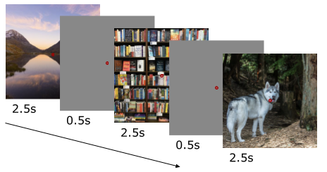

Experiments
Experimental design and task structure for the LAION-fMRI dataset.
Experimental Design
Overview
The LAION-fMRI dataset includes data from multiple experimental paradigms designed to investigate neural responses to visual stimuli.
Design Types
The experiments utilize established fMRI design paradigms:
Block Design
Sustained presentation of stimulus category
Block duration: 12-20 seconds
Inter-block rest periods
Multiple blocks per run
Event-Related Design
Individual trial presentations
Variable inter-trial intervals
Jittered timing for optimal estimation
Randomized trial order
Mixed Design
Combination of block and event-related elements
Allows investigation of both sustained and transient responses
Task Structure
Experimental Sessions
Each participant completed multiple scanning sessions:
Session Structure:
├── Session 01: Anatomical + Localizer
├── Session 02: Main Experiment Runs 1-4
├── Session 03: Main Experiment Runs 5-8
└── Session 04: Validation Runs
{kind=link}
Session structure overview in the LAION-fMRI dataset.
Run Parameters
Typical Run Specifications:
Duration: 6-10 minutes per run
Number of trials: varies by experiment (60-120 trials)
Repetition Time (TR): specified in acquisition parameters
Volumes per run: varies by duration and TR
Trial Structure
Individual trial timing:
Trial Timeline:
├── Fixation: 500ms
├── Stimulus: 500-2000ms (varies by experiment)
├── Response window: 1000-2000ms
└── Inter-trial interval: 2000-6000ms (jittered)
Experimental Conditions
Condition Types
Experiments include various conditions:
Stimulus Categories:
Category A (e.g., faces)
Category B (e.g., scenes)
Category C (e.g., objects)
Baseline/Fixation
Task Demands:
Passive viewing
One-back memory task
Category detection
Feature discrimination
Attention Conditions:
Attended stimuli
Unattended stimuli
Divided attention
Counterbalancing
Experimental design includes counterbalancing across:
Stimulus presentation order
Category assignment to conditions
Run order across sessions
Left/right button mapping
Events Files
Format
Event timing information is stored in TSV (Tab-Separated Values) format following BIDS conventions:
sub-01/func/sub-01_task-nback_run-01_events.tsv
Example Events File
onset duration trial_type stimulus_id response_time accuracy
2.0 0.5 face stim_0001 0.823 1
6.5 0.5 scene stim_0045 0.912 1
11.2 0.5 object stim_0123 0.0 0
15.8 0.5 face stim_0002 0.756 1
The respective events.json files provide detailed descriptions of each column.
{
"onset": {
"LongName": "Event onset time",
"Description": "Time in seconds from the start of acquisition when the event begins",
"Units": "seconds"
},
"duration": {
"LongName": "Event duration",
"Description": "Duration of the stimulus presentation",
"Units": "seconds"
},
"trial_type": {
"LongName": "Trial type",
"Description": "Category or type of stimulus presented in this trial",
"Levels": {
"face": "Human face stimulus",
"scene": "Natural or indoor scene stimulus",
"object": "Object stimulus",
"baseline": "Fixation or rest period"
}
},
"stimulus_id": {
"LongName": "Stimulus identifier",
"Description": "Unique identifier for the specific stimulus image presented, references stimuli.tsv"
},
"response_time": {
"LongName": "Response time",
"Description": "Time in seconds from stimulus onset to participant response. 0 indicates no response or missed trial",
"Units": "seconds"
},
"accuracy": {
"LongName": "Response accuracy",
"Description": "Whether the participant's response was correct",
"Levels": {
"1": "Correct response",
"0": "Incorrect response or miss",
"n/a": "No response required for this trial type"
}
}
}
Experimental Protocols
Main Experiment
Objective: Investigate neural responses to different visual categories
Procedure:
Participant positioned in scanner
Structural scan acquisition
Functional localizer run
Main experimental runs (typically 4-8 runs)
Validation run
Instructions to Participants:
Participants were instructed to:
Maintain fixation on central cross
Respond to target stimuli (when applicable)
Stay alert throughout the run
Minimize head movement
Localizer Experiment
Purpose: Identify category-selective brain regions
Design:
Block design with alternating categories
Each category block: 16-20 seconds
Multiple repetitions per category
N-back Task
{kind=link}

N-back task design overview in the LAION-fMRI dataset.
Purpose: Assess working memory and attention
Timing and Synchronization
Stimulus Presentation
Stimuli were presented using:
Software: PsychoPy, Presentation, or similar
Display: MRI-compatible LCD screen
Resolution: 1920x1080
Refresh rate: 60 Hz
Viewing distance: ~120 cm
Scanner Synchronization
Stimulus presentation was synchronized with MRI acquisition:
TTL pulse from scanner triggers experiment start
Each volume acquisition logged for timing verification
Drift correction applied if necessary
Quality Assurance
Experimental Monitoring
During scanning:
Real-time monitoring of participant responses
Head motion tracking
Attention monitoring via task performance
Post-Scan Verification
After each session:
Behavioral data completeness check
Timing accuracy verification
Response file validation
Event file generation and validation